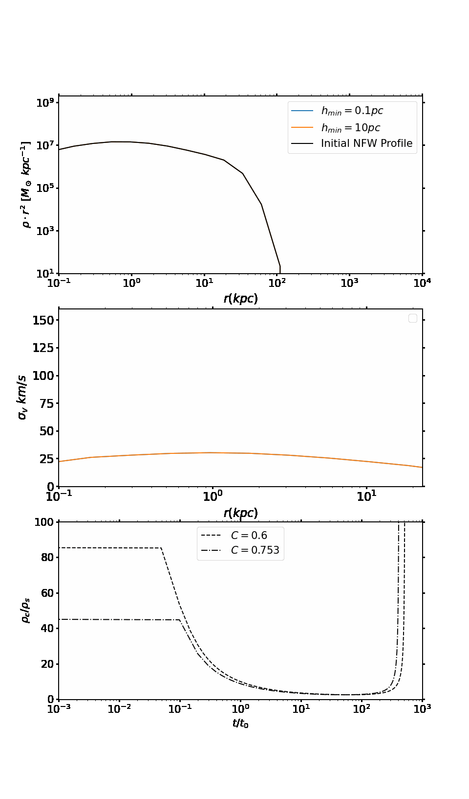

 Animated evolution of the density and velocity dispersion profiles for an isolated dark matter halo assuming self-interactions. The last panel shows the evolution of the core density in normalized units for the simulated halo, with the dashed and dotted lines show an analytical prediction for comparison.
A visualization of a simulated, isolated dark matter halo with self-interactions. Initially, these interactions cause core expansion and a drop in mass density, followed by halo collapse after approximately 5 billion years. This mechanism may explain the large population of small satellite galaxies orbiting the Milky Way and other massive galaxies.
The range of temperatures on synchronously rotating M-dwarf planets, with AD Leonis and TRAPPIST-1 representing the hottest and coldest M-dwarf stars, respectively. The antistellar (night) side of M-dwarf planets experiences complete deglaciation at 2050–2100 W/m², while the dayside remains temperate at around 25°C.
The Eccentric Habitable Zone (EHZ), highlighted in bright yellow, represents the range of stellar flux as a function of orbital eccentricity, e, that allows for habitable surface temperatures. Bright regions indicate a higher degree of habitability (close to 1), while dark blue areas correspond to completely uninhabitable planets. This EHZ assumes the planet is initially frozen, significantly reducing the habitable zone for circular orbits. Planets with higher eccentricities have a larger EHZ.
The evolution of the central density of SIDM halos, modeled using three Monte Carlo scattering methods: Spline, Spline Overlap, and Top-Hat, as a function of total scattered mass. The Spline method results in higher central densities after an equivalent number of scattering events, attributed to its superior energy and momentum conservation.